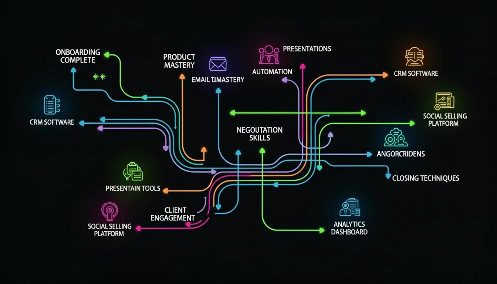

Create Sales Enablement Plan: 6-Step Guide (2025)

Most sales enablement programs fail. Reps ignore the content. Managers can't prove ROI. Training doesn't stick. Here's how to build a plan that actually works.
What Is Sales Enablement?
Definition: Providing salespeople with the content, training, tools, and coaching they need to sell effectively.
The problem: Most companies treat enablement as a content dump. Real enablement = systematic support at every stage of the sale.
Step 1: Build a Sales Enablement Charter
Purpose: Define mission, scope, and objectives
Key questions to answer:
- What is the mission of our enablement program?
- Who owns it? (Sales Ops? Enablement team? Marketing?)
- What's in scope vs out of scope?
- How does this align with sales goals?
- What success looks like in Year 1
Example mission: "Reduce new rep ramp time from 6 months to 3 months while maintaining 85%+ quota attainment."
Step 2: Interview Sales Management & Reps
Don't build in a vacuum. Talk to your sales team.
Questions for managers:
- What's the biggest gap in rep skills?
- Where do deals stall?
- What content/training would move the needle most?
Questions for reps:
- What's your biggest challenge right now?
- What objections do you struggle with?
- What content do you wish you had?
- What training would actually help?
Result: A prioritized list of needs, not guesses.
Step 3: Define Key Metrics
If it's not measured, it doesn't get done.
Metric categories:
- Adoption: % of reps using content/tools
- Proficiency: Certification completion rates
- Business Impact: Quota attainment, win rate, deal size
- Efficiency: Ramp time, sales cycle length
Example metrics:
- New rep time-to-first-deal: Target <90 days
- Quota attainment: 75% of reps hit quota
- Win rate: Increase from 22% to 28%
- Content usage: 80% of reps access playbook monthly
Step 4: Map Content to Buyer's Journey
Match enablement efforts to sales stages.
Framework:
- Awareness: Prospecting scripts, cold email templates
- Consideration: Discovery question guides, demo decks
- Decision: ROI calculators, case studies, pricing sheets
- Retention: Onboarding guides, expansion playbooks
Pro tip: Organize in your CRM by sales stage so reps can find what they need when they need it.
Read: How to Write a Sales Playbook
Step 5: Get Stakeholder Buy-In
Enablement needs support from:
- Sales leadership: Budget, priority, mandate
- Marketing: Content creation, messaging alignment
- Product: Feature updates, roadmap visibility
- Executive team: Resources, headcount
How to get buy-in:
- Show data (current gaps & impact)
- Quantify ROI (e.g., "Reducing ramp time by 3 months = $150K saved")
- Start small (pilot program with 1 team)
- Show quick wins (improve 1 metric in Q1)
Step 6: Implement & Iterate
Launch process:
- Pilot (Week 1-4): Test with 5-10 reps
- Gather feedback: What worked? What didn't?
- Refine: Fix what's broken
- Roll out: Full team launch
- Monitor metrics: Track weekly/monthly
- Iterate quarterly: Update content, training
Ongoing activities:
- Monthly content audits (remove outdated)
- Quarterly training refreshers
- Weekly "sales tip" emails
- Regular rep interviews (what's missing?)
Common Enablement Mistakes
- Too much content: Reps get overwhelmed
- One-and-done training: Skills decay without reinforcement
- No metrics: Can't prove ROI
- Content silos: Hard to find what you need
- Ignoring rep feedback: Building what you think they need vs what they actually need
Tools for Sales Enablement
Content management:
- Seismic, Highspot, Guru (enterprise)
- Notion, Google Drive (budget-friendly)
Training:
- Gong, Chorus (call review & coaching)
- Lessonly, Mindtickle (onboarding)
Analytics:
- CRM dashboards (Salesforce, HubSpot)
- BI tools (Tableau, Looker)
Conclusion
Sales enablement isn't a project—it's a program. Build the charter. Talk to your team. Measure what matters. Map content to the buyer journey. Get buy-in. Launch, learn, iterate.
Great enablement = better reps = more revenue.
Want to learn about sales alignment? Read Sales vs Marketing Alignment.